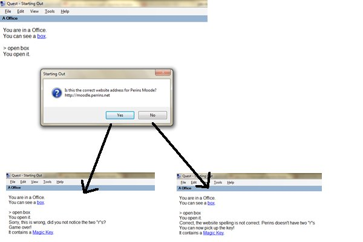

Adding a Yes/No Question to a Container
A key is inside a box but you have to answer the question correctly to get it – here is how
-
I have made a box container with the key inside it:
-
I make the box a normal container and tick various options:
-
I then add in an IF script on the After Opening the object: section
-
I add a player answers Yes to script to the Script to run when opening object
-
I type in the Yes/No question that they see on the keypad:
-
I put in the answer if they choose “Yes” (the wrong answer)
-
I used the Game Over command to end their chances..
-
I then add the section if they say “Yes” (the wrong answer)
Here are the screenshots of what the game now looks like:

The text “It contains a Magic Key” appears at the end
You can have a way of making that appear only if they are correct – you do this by moving the object from a “Hidden” room to the box.
To do this you need to make a hidden room first and put the key in there then adding a move command. Finally you need to delay the last message coming in using an “Run script after” command